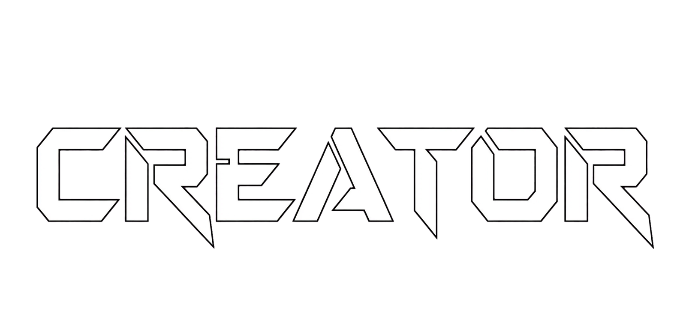
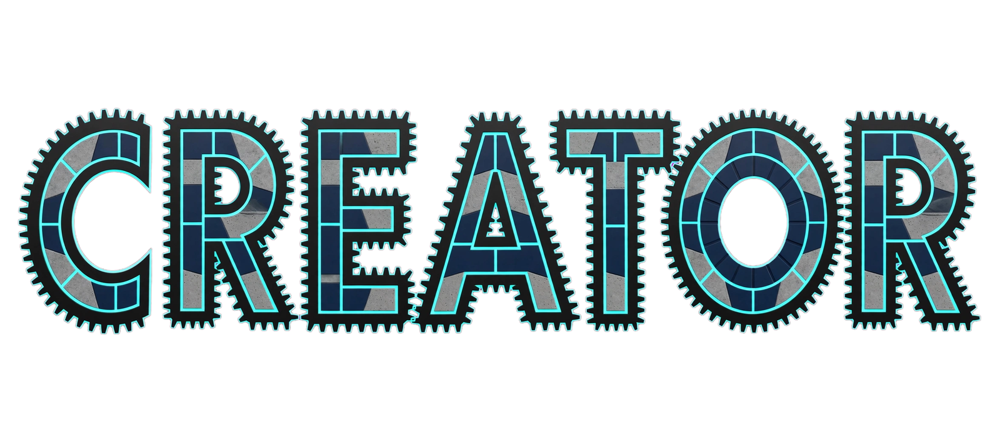
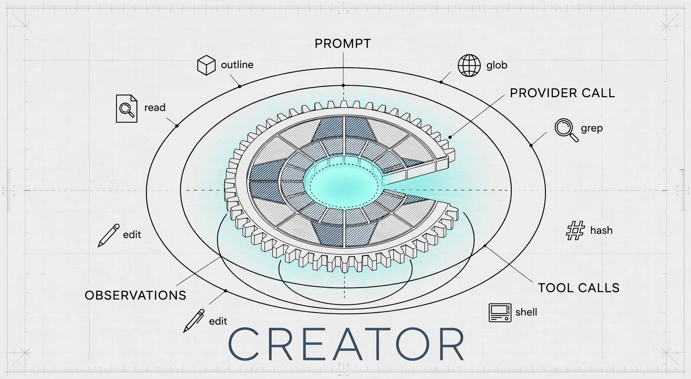

Digest + Handle
No raw command output ever reaches the model. Output lands on disk as an artifact and comes back as a tiny digest + [handle] you page with out().
Creator is an autonomous, terminal-first IDE and agent that turns massive outputs into small digests with handles. Detail is pulled on demand — your context stays sharp, even on 8 MB of failing tests.

Every feature exists because a real agent drowned in context, a real diff needed review, or a real build needed a gate.
No raw command output ever reaches the model. Output lands on disk as an artifact and comes back as a tiny digest + [handle] you page with out().
A full-screen terminal IDE: welcome hero, fuzzy palette (F1), 35 highlight lenses for the conversation, sidebar with live tokens, and mouse support — all in creator tui.
Fork isolated sub-agents with fresh contexts. Profiles — explorer, planner, reviewer, editor — curate toolsets the spawn can never escape.
A persistent task board with dependencies, where a task only closes when its verify command exits 0 — with receipts to prove it.
Extend the toolset and intercept every tool call with Lua. Workspace plugins stay untrusted until you opt in — --workspace-plugins is off by default.
The exact same toolset — policy-checked, budget-clipped — is served over MCP on stdio. Any MCP client can drive Creator's hands.
No config cathedral. One binary, one env var, one command.
One line — no Go, no admin, no PATH editing.
Any of 17+ providers — or a fully local model. Pollinations Free needs no key at all.
Mission control for the full-screen IDE, or the headless one-liner.
Every pixel is in the repo. No telemetry, no account, no electron.

ctrl+g) cycles filters for errors, secrets, TODOs, URLs, risky ops — matched words light up in the conversation.Click any row to copy the command.
$ go test ./...
… 91,240 lines of output dumped into context …
FAIL
model: spends 40k tokens re-reading noise
$ go test ./... job j_01h9x2 · success · exit 0 · 312ms · 8.4MB A-300 pkg/a.go:12: cannot use value (int) as string A-41 pkg/b.go:9: undefined: helper ── last lines: FAIL github.com/acme/app [build failed] [handle=j_01h9x2 · 38 of 91240 lines · out(handle, mode="grep", pattern="cannot use")]

Creator is free, open source (MIT), and runs anywhere Go does — Windows, macOS, Linux.
Clone the repo